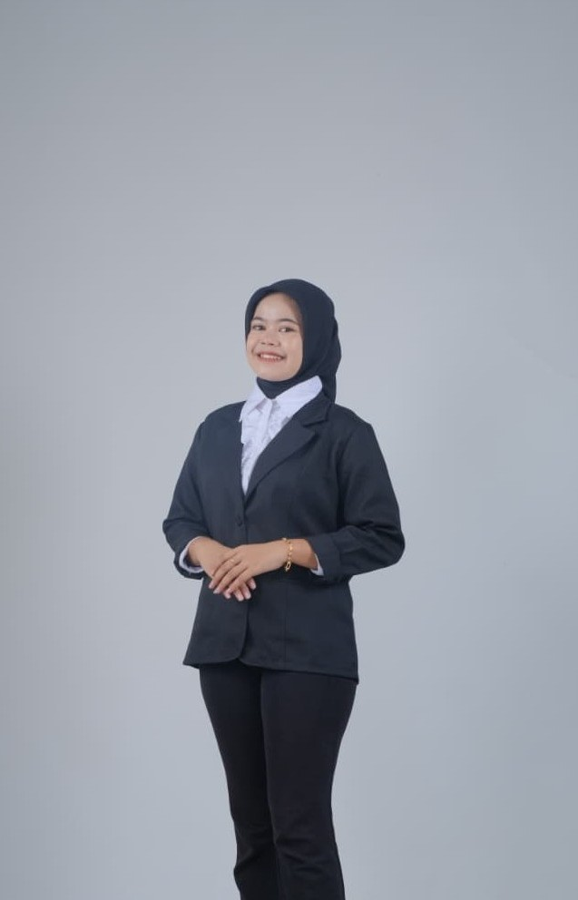
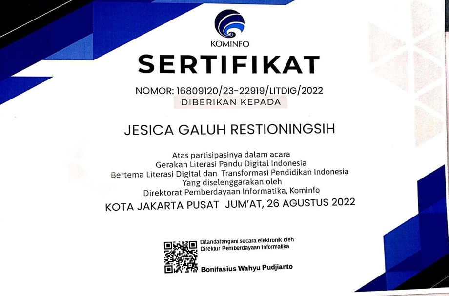
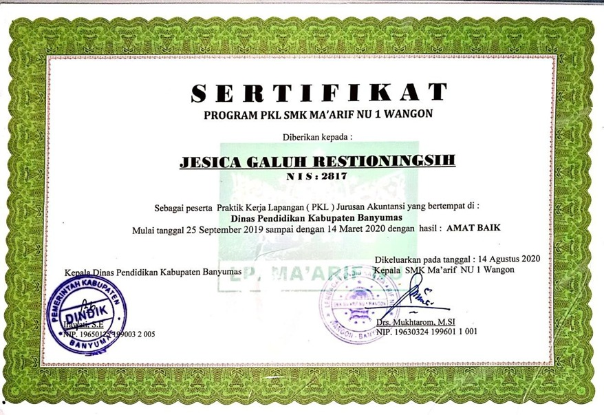
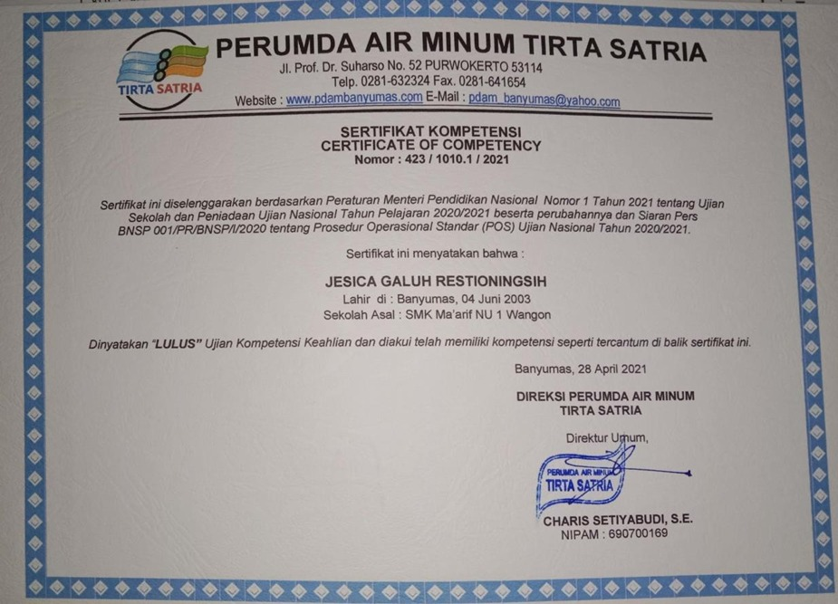
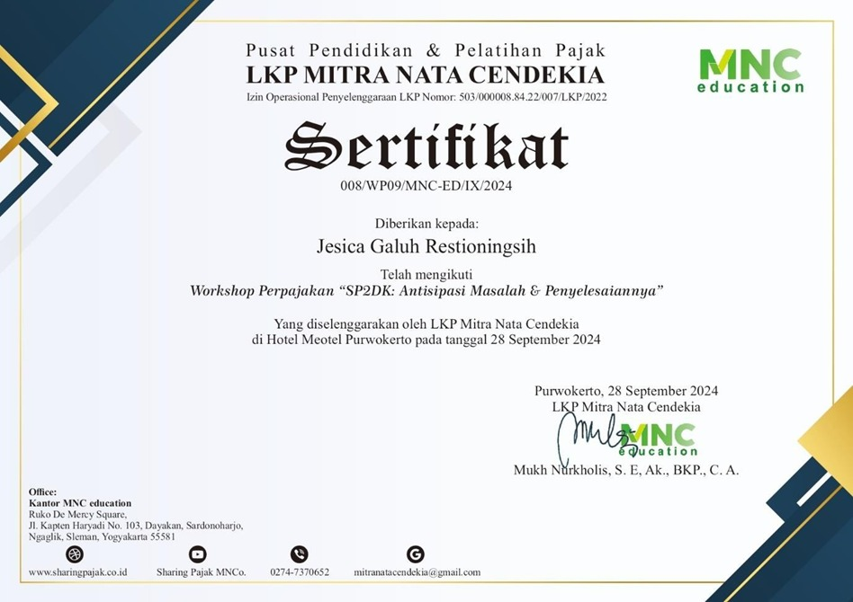
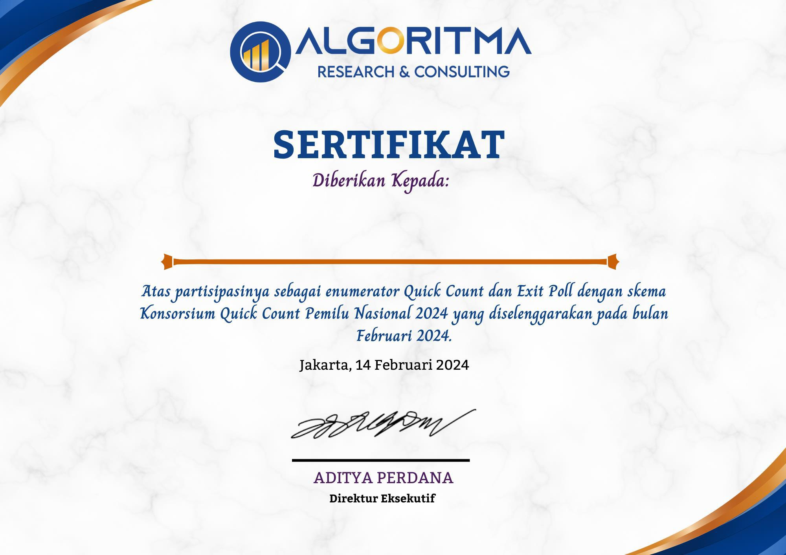
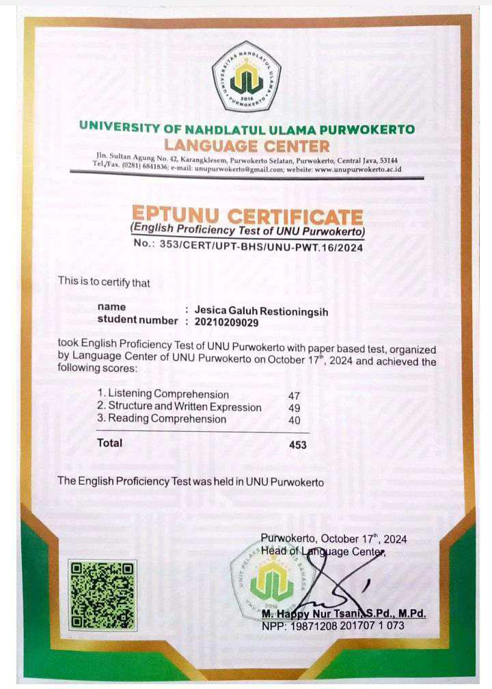

Saya adalah lulusan S1 Akuntansi dengan pemahaman kuat tentang prinsip-prinsip akuntansi,pengelolaan keuangan, dan analisis data. Berpengalaman dalam penyusunan laporan keuangan dan pengelolaan anggaran, serta terbiasa menggunakan Microsoft Excel untuk meningkatkan efisiensi kerja. Dikenal sebagai individu yang teliti, bertanggung jawab, dan komunikatif, saya mampu bekerja secara tim maupun mandiri untuk menyelesaikan proyek tepat waktu. Dengan semangat belajar yang tinggi, saya berkomitmen mengembangkan kemampuan di bidang akuntansi dan keuangan demi mendukung pertumbuhan perusahaan.
Melakukan evaluasi dan penyusunan laporan keuangan untuk kebutuhan perusahaan dan pelaporan perpajakan.
Membuat analisis tren keuangan tahunan menggunakan rasio likuiditas, profitabilitas, dan solvabilitas.

Penyelenggara: Gerakan Literasi Pandu Digital Indonesia | 2022

Penyelenggara: Dinas Pendidikan | 2020

Penyelenggara: PERUMDA AIR MINUM TIRTA SATRIA | 2021

Penyelenggara: MNC Education | 2024

Penyelenggara: ALGORITMA Reserch & Consulting | 2024

Penyelenggara: UNU Purwokerto | 2024
Silakan hubungi saya untuk diskusi peluang kerja atau kolaborasi.
Email: jesicagaluh5@gmail.com
Telepon: 087768202042
LinkedIn: linkedin.com/in/jesicaglhrstngsh
Lokasi: Banyumas, Indonesia